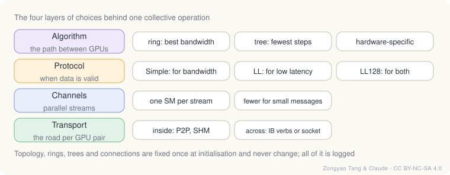
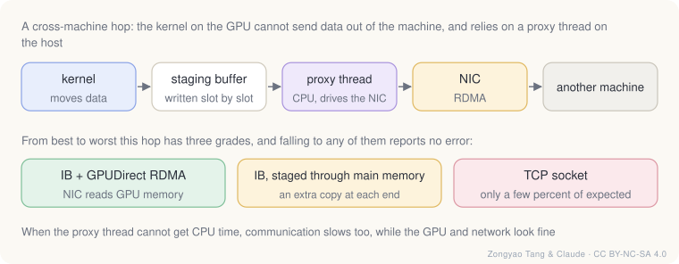

The thread: most of the work is done at initialisation → each operation is cut into several "channels" executed in parallel → how data is handed over inside a channel has three protocols to choose from → in what pattern the data passes between GPUs has two algorithms, ring and tree → at the very bottom, the transport by which the data leaves this GPU. These five layers correspond, top to bottom, to the information in NCCL's logs and to the directories of its source; once this unit is understood, the troubleshooting in 6.3 has a footing.
Part 6 · Collective communication and NCCL6.2 Inside NCCL: topology, channels and protocols
Translated by AI (Anthropic's Claude) from the Chinese edition. The Chinese original is the reference.
This unit answersWhen you call an all-reduce, what does NCCL do inside?
Follows 6.1 (what collective communication is) and part 5 (the links): this unit looks at how NCCL lays one collective operation out onto specific links.
- Most of the work is done once at initialisation: probe the topology, build rings and trees, connect every pair of GPUs
- Channels: one operation cut into several parallel streams, each taking one of the GPU's compute units
- Three protocols: Simple wants bandwidth, LL wants low latency, LL128 gets both
- The algorithm decides how data travels between GPUs: the ring has the best bandwidth, the tree the fewest steps
- The transport layer: P2P or shared memory inside a machine, IB verbs or sockets across machines
Explanation
1Most of the work is done once at initialisation: probe the topology, build rings and trees, connect every pair of GPUs
When a communicator is created, NCCL first works out this machine's hardware topology, then exchanges information with the other processes, builds from it two communication graphs for all GPUs, a ring and a tree, and connects every pair of GPUs adjacent on the graphs. Every collective operation after that reuses these graphs and connections.

Each of the next four cards covers one layer A communicator is NCCL's handle for "a group of GPUs that will communicate with each other". Each GPU has a number in it (its rank), from 0 to N−1. PyTorch creates it for you when multi-GPU training starts. Creating it takes roughly four steps.
One: out-of-band handshake (bootstrap). The processes first find each other over an ordinary TCP connection and exchange their information. This connection is used only for building the communicator, never for training data. Which network interface it uses is set by
NCCL_SOCKET_IFNAME.Two: probe the topology. Each process reads the system's
/sysdirectory to work out this machine's PCIe tree: which GPUs and network cards there are, which switch chip and which CPU socket each sits under, whether the GPUs have NVLink between them, and how wide each link is. This is the "distance" map of 5.1, which NCCL builds into an internal data structure.Three: build the graphs. From the topology, lay out the order of communication for all GPUs:
- Ring: each GPU remembers the GPU before it and the GPU after it. The layout tries to have adjacent GPUs inside a machine use NVLink, and the few cross-machine hops land on suitable network cards.
- Tree: each GPU remembers its parent and its children. NCCL uses two complementary binary trees: the inner nodes of one tree are leaves in the other, so the send and receive load on every GPU is balanced.
These graphs are built at initialisation, and all collective operations after that reuse them.
Four: build the connections. For each pair of adjacent GPUs on the graphs, choose a transport and set up the connection: inside a machine, map the other GPU's memory; across machines, register memory and set up QPs (the slow operations of 5.2).
Why troubleshooting starts here. Because "which road to take" is settled at this stage. NCCL does not change roads during training. If at initialisation it chose TCP instead of InfiniBand, or chose a network card it should not have, every step of communication after that is slow, with no further warning. Fortunately all these choices are printed in the log (6.3).
You can also have NCCL write out the topology it probed: set
NCCL_TOPO_DUMP_FILEto a file path, and after initialisation you get an XML file. When you suspect NCCL has "misread" the hardware inside a container or virtual machine, this file is direct evidence.An analogyLike a relay race: before the race the running order is set, each runner learns who takes the baton next, and a practice run checks the hand-overs work. Once the starting gun fires, it is only running and passing the baton, no more discussion.
So when multi-machine training starts slowly, hangs at start-up or reports errors, the problem is almost always at this stage; and the choices made at this stage (which network card, which transport) keep affecting things until training ends.
Builds on Ring all-reduce: however many GPUs there are, each GPU's traffic barely changesThe "distance" between two devices decides which road the data takesRDMA's four things: registered memory, queue pairs, work requests, completion queuesUsed later in Channels: one operation cut into several parallel streams, each taking one of the GPU's compute unitsNCCL's initialisation log answers three questions: which network it used, which road each pair of GPUs takes, how many channels it builtA distributed training job is a set of Pods that know each otherSourcesDemystifying NCCL, page 2: communicators and how they are startedDemystifying NCCL, page 3: rings and double binary treesNCCL User Guide: topology detection- The connections are in place. Now a call to all-reduce comes in, and the first thing NCCL has to decide is how many "hands" to use for the moving.
2Channels: one operation cut into several parallel streams, each taking one of the GPU's compute units
What moves the data and does the additions is a kernel on the GPU. Doing it with a single compute unit (SM) neither keeps NVLink or the network card busy nor uses the other compute units. So NCCL cuts each operation's data into several parts and hands each part to a "channel"; each channel is a block in the kernel, taking one SM, all working in parallel.
Why parallelise. On the GPU, collective communication is a kernel: read data from the send buffer, add it to local data where needed, and write it to the receive buffer or a staging buffer. It is pure moving and element-wise arithmetic, limited by bandwidth. The bandwidth one SM can drive is limited, far less than a set of NVLinks or a fast network card.
What a channel is. Each channel is responsible for one contiguous, non-overlapping stretch of the input data. At the level of CUDA (3.2 covered grids and blocks):
- When NCCL's kernel launches, the size of the grid is the number of channels.
- Each block corresponds to one channel, running on one SM.
- Inside a block the work is divided by warp: the first two warps load the information this operation needs into shared memory, and the remaining warps move data and do the arithmetic.
Each channel also has its own copy of the ring or tree, so different channels can take different links. On a machine with several network cards, the channels can leave through different cards, putting all of them to use.
How data flows in a channel. Each channel has a fixed-size staging buffer (4 MiB by default under the Simple protocol), divided into 8 slots. Data flows through these slots chunk by chunk: some slots are being written by the kernel, some are waiting for the network card to send them, some are on the network, some can already be read by the other end. So sending, transfer and receiving overlap like a pipeline, instead of "send a whole batch, then deal with the next". This is "fill the waiting with other work" from 0.1, as it looks inside communication.
The trade-off in the number of channels.
- Too few: the GPU side becomes the bottleneck and the links are not kept busy.
- Too many: each channel gets smaller chunks of data. In cross-machine transfers, if each chunk handed to the network card is smaller than one slot of the staging buffer (512 KiB), the card is sending chunks that are not full, and transfer efficiency drops. So for small messages, NCCL actively reduces the number of channels.
- One more cost that is easy to overlook: the SMs the channels occupy are taken away from training's computation. When communication and computation overlap (7.1), they compete for the same SMs.
At initialisation NCCL builds a set of channels according to the topology, and for each operation decides how many to actually use from the message size and the chosen algorithm and protocol. All of this is decided by its internal tuning model, and the official advice is not to set it by hand.
An analogyLike moving house: when one conveyor belt is not fast enough, run several side by side, each carrying part of the boxes. But more belts are not always better: with too few boxes, each belt carries only a sparse few, and it is not worth it.
So the number of channels is a trade-off: more gives the GPU side more parallelism and can use several network cards at once; but each channel gets less data, network transfers become less efficient, and more SMs are taken from training's computation.
Builds on Most of the work is done once at initialisation: probe the topology, build rings and trees, connect every pair of GPUsA thread's address: blockIdx × blockDim + threadIdxFive ideas come back in every layerSourcesDemystifying NCCL, page 2: communication channelsDemystifying NCCL, page 7: channel buffers and data partitioningDemystifying NCCL, page 8: mapping channels onto the CUDA hierarchy- The data is cut up and has to be passed hop by hop between GPUs. For how each hop is handed over, NCCL has three ways.
3Three protocols: Simple wants bandwidth, LL wants low latency, LL128 gets both
When data is handed from one GPU to the next, how does the receiver know "this chunk is fully written and can be read"? This way of handing over is the protocol. Simple uses large chunks with fairly heavy synchronisation: the highest bandwidth, but high latency per hop. LL writes each 4 bytes of data together with a flag: the lowest latency, but less than half the bandwidth. LL128 works in units of 128 bytes: close to full bandwidth and low latency too, but with requirements on the hardware.
All three protocols solve the same problem: the sender writes data into a shared buffer, and the receiver has to be sure that what it reads is complete and valid.
Simple: designed for bandwidth. Data is written in large chunks (512 KiB per chunk by default). After a whole chunk is written, a memory fence makes sure the data is visible to the receiver, and then a counter is updated to tell the other side "one more chunk is ready". The receiver has to wait for a whole chunk to arrive before it can read. The synchronisation is fairly heavy, but spread over 512 KiB it is negligible, so bandwidth is close to the link's limit. For very small messages, this synchronisation cost becomes the main part: the paper gives a latency of about 6 microseconds per hop.
LL (low latency): designed for latency. Each write is 8 bytes: 4 bytes of data plus a 4-byte flag. These 8 bytes are written in one atomic write, so as soon as the receiver sees the flag take the expected value, it knows the 4 bytes of data beside it are valid, with no other synchronisation needed. About 1 microsecond per hop. It has two costs: half the space goes to flags; and so that a thread on the host can poll the flags, the staging buffer has to be in main memory, which rules out GPUDirect RDMA. So its bandwidth is only a quarter to a half of peak.
LL128: both. The same idea as LL, but in units of 128 bytes: 120 bytes of data plus 8 bytes of flag, reaching about 95% of peak bandwidth, about 2 microseconds per hop. It requires that these 128-byte writes are not split up or reordered; NVLink guarantees this, some other paths do not. So NCCL enables it only when it has confirmed the hardware supports it, as otherwise data could be corrupted.
Simple LL LL128 Aim High bandwidth Low latency Low latency and high bandwidth Each write A large chunk of data 4 bytes of data + 4-byte flag 120 bytes of data + 8-byte flag Bandwidth Close to peak 25%–50% of peak About 95% of peak Latency per hop About 6 microseconds About 1 microsecond About 2 microseconds (The figures are from Table 1 of Demystifying NCCL, orders of magnitude the authors cite and measured; they vary across hardware.)
These are exactly the two terms of 6.1's time formula. The time of a small message is decided by "fixed latency × number of steps", so choose the protocol with the lowest latency; that of a large message by "data size ÷ bandwidth", so choose the protocol with the highest bandwidth.
The environment variable
NCCL_PROTOcan select or exclude a protocol. The official documentation is clear on this: it is not recommended, and only for excluding a protocol you suspect of a bug.An analogyLike handing over goods: Simple is signing for a whole lorry-load at once, heavy paperwork per trip but a large load; LL is a receipt slip with every small item, signed on arrival, quick but not carrying much; LL128 is one signature per crate, in between.
So small messages use LL or LL128 and large messages Simple, and NCCL switches automatically by message size. In the same training run, tensors of different sizes may take different protocols.
Builds on Channels: one operation cut into several parallel streams, each taking one of the GPU's compute unitsCommunication time = fixed latency + data size ÷ bandwidthUsed later in The algorithm decides how data travels between GPUs: the ring has the best bandwidth, the tree the fewest stepsSourcesDemystifying NCCL, page 3: the three protocols and table 1Demystifying NCCL, page 7, table 4: buffer sizes for each protocolNCCL environment variables: NCCL_PROTO- The protocol governs "one hop". How the data travels among the GPUs overall is a choice at another level.
4The algorithm decides how data travels between GPUs: the ring has the best bandwidth, the tree the fewest steps
The same all-reduce can pass data station by station round a ring, or along a tree, gathering upward first and then distributing downward. A ring keeps every link at full load and uses bandwidth best, but its number of steps grows linearly with the number of GPUs; a tree's number of steps grows only with the logarithm of the number of GPUs, which suits small messages on many GPUs. The algorithm and the protocol of the previous card are two independent choices, which can be combined freely.
Ring. The algorithm of 6.1: N GPUs in a ring, all-reduce takes 2(N−1) steps. Its advantage is that each GPU communicates only with its neighbours on either side, every link on the ring carries exactly the same load, and with large messages bandwidth utilisation is the highest. Its weakness is the number of steps: double the GPUs and the steps double too, with the latency of every step adding up.
Tree. Data is first gathered level by level from the leaves towards the root; once the root has the sum, it is distributed level by level back down. The number of steps is about twice the depth of the tree, that is, proportional to log N. With 1024 GPUs, a ring takes over two thousand steps, a tree only about twenty.
An ordinary tree has a drawback: leaf nodes only send and never forward, inner nodes both receive and send, the load is uneven, and half the bandwidth is wasted. NCCL uses a double binary tree: two trees built at once, the inner nodes of one acting as leaves in the other, each carrying half the data. So each GPU's total sending and receiving is balanced, and bandwidth utilisation comes close to the ring's.
There are a few more algorithms that depend on particular hardware; it is enough to know the names and recognise them in logs:
- NVLS: uses the NVSwitch chips' own capability to do the combining inside a machine.
- CollNet: has InfiniBand switches that support this feature take part in the combining.
- PAT: a tree-shaped algorithm added in more recent versions.
How algorithm and protocol relate. They are orthogonal: the algorithm decides "who sends to whom, in what order", the protocol decides "how each hop is handed over". Ring and tree can each be paired with any of Simple, LL and LL128. What an operation actually uses is an "algorithm + protocol" combination.
How the choice is made. NCCL has an internal tuning model: for each available combination, it estimates how long this operation will take from the number of GPUs, the message size, and the probed link bandwidth and latency, and chooses the smallest. At the same time it decides how many channels to use. Roughly:
- Small messages: tree, with a low-latency protocol.
- Large messages: ring, with Simple.
- With very many GPUs, the threshold for "large" rises, because the ring's number of steps costs more.
NCCL_ALGOcan force an algorithm. Its legitimate use is diagnosis: for example, if you suspect an algorithm behaves abnormally on your network, force another one and compare. For special situations that persist on a platform, the official recommendation is to write a tuning plug-in to correct the model's choice, rather than fixing environment variables in scripts. Meta's paper mentions that they adjusted this choice for their own network, for instance still using the tree for larger messages.An analogyLike telling the whole company something: passing it from one person to the next (ring), everyone speaks only once, but it takes a long time to get round; passing it down the organisation chart level by level (tree), a few levels and it has reached everyone.
So for every operation NCCL has to answer two questions: what pattern to follow (the algorithm), and how each hop is handed over (the protocol). It has an internal model that estimates the time of each combination from the number of GPUs, the message size and the state of the links, and chooses the fastest.
Builds on Three protocols: Simple wants bandwidth, LL wants low latency, LL128 gets bothRing all-reduce: however many GPUs there are, each GPU's traffic barely changesUsed later in The transport layer: P2P or shared memory inside a machine, IB verbs or sockets across machinesSourcesDemystifying NCCL, page 3: rings and double binary treesDemystifying NCCL, page 6, table 3: the algorithms and protocols each operation supportsNVIDIA blog: Understanding NCCL Tuning- The last layer: how the data actually leaves this GPU. All the hardware of part 5 connects to NCCL here.
5The transport layer: P2P or shared memory inside a machine, IB verbs or sockets across machines
How data actually gets between two GPUs adjacent on a graph is decided by the transport layer. Inside one machine, the first choice is for one GPU to write directly into the other's memory (P2P, over NVLink or PCIe); failing that, it goes through shared memory in main memory. Across machines, if there is an RDMA network card it uses IB verbs, otherwise it falls back to ordinary TCP sockets.
Inside a machine.
- P2P: one GPU's kernel writes data directly into another GPU's memory, without going through the CPU. With NVLink it takes NVLink, without it PCIe. If the two GPUs belong to the same process, NCCL can also skip the staging buffer and write straight from the source buffer to the destination buffer.
- SHM (shared memory): goes through a shared region in main memory. Used when P2P is not available, or when P2P would actually be worse. An example of the latter: two GPUs on two different CPU sockets that can only reach each other over PCIe, where the CPU handles direct device-to-device traffic poorly and going through main memory is smoother.
Across machines. Here the kernel on the GPU cannot send data straight to another machine; a proxy thread on the host is needed to drive the network card. The division of work:
- The kernel: writes data into a slot of the staging buffer and updates a counter.
- The proxy thread: on finding a slot written, fills in an RDMA work request and hands it to the network card (the
ibv_post_sendof 5.2), then polls the completion queue. - The other end's proxy thread: on finding the data has arrived, updates a counter and tells the other end's kernel to read it.
There are two cross-machine transports:
- NET/IB: uses verbs; both InfiniBand and RoCE go through it. Where the staging buffer lives depends on whether GPUDirect RDMA (5.2) can be used: if so, the buffer is in GPU memory and the network card reads and writes it directly; if not, the buffer is in main memory, with one extra copy between GPU memory and main memory at each end.
- NET/Socket: ordinary TCP. Data has to be copied to main memory first, then go through the kernel's network stack (0.3 covered its costs). This is the fallback when no RDMA is available, and much slower.
Before every transfer the two sides first "meet": the receiver prepares a buffer and tells the sender, and only then does the sender start. This is the "clear to send" message mentioned in 5.2 and 5.3.
The proxy thread deserves attention. It is an ordinary thread running on the CPU that polls without stopping. If it is scheduled onto a core far from the network card (5.1's NUMA), or the CPU is saturated by data-loading processes, cross-machine communication slows down while the GPU and the network both look fine. This is one kind of "communication is slow, but the cause is the CPU".
Falling back is silent. Put the choices above together, and a cross-machine hop has three grades from best to worst: IB with GPUDirect RDMA, IB staged through main memory, TCP sockets. Which grade it falls to depends entirely on whether the conditions at initialisation were met. NCCL does not report an error for "not using the best"; it only writes down truthfully in the log what it used.

How a cross-machine hop divides the work, and the three grades it may fall to Source walkthrough: from ncclAllReduce to the kernel on the channels
The aim is not to understand every line, but to know what each directory in the NCCL repository is responsible for, so you can find the file to look at when a problem comes up. The file names below come from Demystifying NCCL's analysis of version 2.19 and the repository's directory layout; newer versions may have moved things, so go by the version you have.
The call chain of one all-reduce, top to bottom:
src/collectives.cc: the public interface.ncclAllReduceis here; it only packs the arguments into a task description.src/enqueue.cc: the core of scheduling. Here the algorithm and protocol are chosen for this operation, the number of channels decided, the size of each chunk worked out, and then the kernel launched. The "choices made for every operation" of 6.2 all happen in this file.src/graph/tuning.cc: the tuning model. The bandwidth and latency estimates for each "algorithm + protocol" combination are here. To know why NCCL chose a certain combination, look here.src/device/: the code that runs on the GPU. Files such asall_reduce.hhold the steps for each operation and each algorithm (the sequence ofrecvReduceSendfrom 6.1);prims_simple.h,prims_ll.handprims_ll128.hare each protocol's implementation of those steps.
Initialisation:
src/init.cc: the main flow of creating a communicator.src/bootstrap.cc: the out-of-band handshake.src/graph/topo.cc: probing the hardware topology.rings.cc,trees.cc,connect.cc: building the rings, building the trees, and connecting the graphs.
The transport layer:
src/transport/p2p.cc,shm.cc: the two transports inside a machine.src/transport/net.cc: the common part of cross-machine transport;net_ib.ccis the verbs implementation,net_socket.ccthe TCP implementation.src/proxy.cc: the proxy thread.
How to use this map. Three examples:
- An
NCCL WARNline in the log carries a file name and line number (say fromnet_ib.cc); you know at once that it comes from the verbs layer, and can go back to the skeleton in 5.2 to match which step failed. - To find out exactly how the conditions for enabling GPUDirect RDMA are judged, search
net_ib.ccandgraph/forGDR. - To find out what an environment variable actually affects, search the repository for its name (also search without the
NCCL_prefix); you can usually go straight to the place where it is read.
One thing to note here: this walkthrough was written from the paper and the documentation, without checking line by line against a specific NCCL version, so go by the version you have when reading.
An analogyLike sending something: within the same building, deliver it by hand; within the same city, use a dedicated courier line; only when there is no dedicated line, use the ordinary post, which is much slower.
So the same all-reduce can differ in speed by dozens of times depending on the transport underneath. And which one is used is decided automatically by NCCL at initialisation from the hardware: when the conditions are not met, it quietly falls back, without reporting an error.
Builds on The algorithm decides how data travels between GPUs: the ring has the best bandwidth, the tree the fewest stepsGPUDirect RDMA: what is registered is not main memory but GPU memoryNUMA: processes, memory and devices should be on the same sideThrough the operating system's network stack, every packet passes many formalitiesUsed later in NCCL's initialisation log answers three questions: which network it used, which road each pair of GPUs takes, how many channels it builtCase three: after switching to a new batch of machines, multi-machine training is three times slowerSourcesDemystifying NCCL, page 4: table 2 and transports inside a machineDemystifying NCCL, page 5: cross-machine transport and GPUDirect RDMANCCL source repository
Putting it together
At initialisation NCCL probes the topology, builds the rings and trees, and connects every pair of GPUs. After that, for each operation: first choose the algorithm (ring or tree, which decides how data travels between GPUs) and the protocol (Simple, LL or LL128, which decides the trade-off between bandwidth and latency), then cut the data among several channels processed in parallel, each of which sends its data out through the transport layer (P2P or shared memory inside a machine, IB verbs or sockets across machines).
Test yourself
Without looking back at the explanation, say it in your own words.
- What does NCCL do when it creates a communicator? Why should troubleshooting communication problems start with initialisation?
- What is an NCCL "channel"? What does each of too many and too few channels cost?
- What characterises each of NCCL's three protocols, Simple, LL and LL128? What situation suits each?
- What are the strengths and weaknesses of NCCL's ring and tree algorithms? How do "algorithm" and "protocol" relate?
- What transports does NCCL have inside a machine and across machines? In cross-machine transfers, what role does the "proxy thread" on the host play?